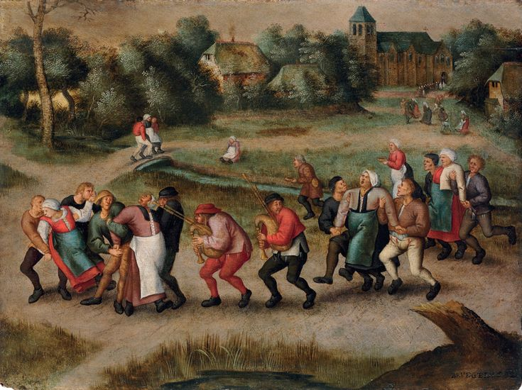
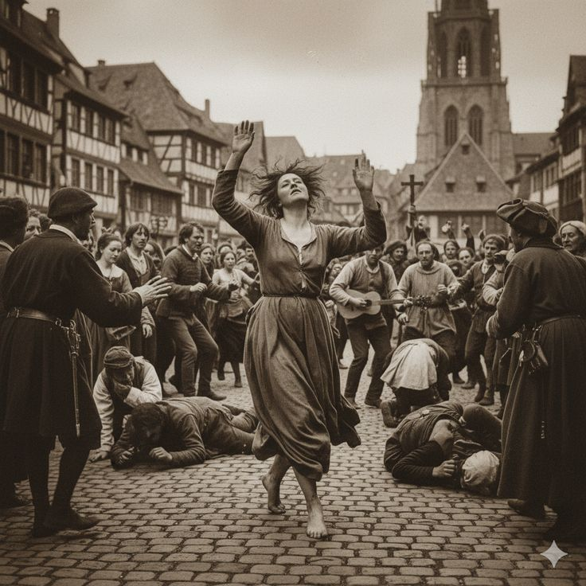

¿Qué sucedió?
En el verano de 1518, varias personas comenzaron a bailar durante periodos prolongados en las calles de Estrasburgo, sin que se conozca con certeza la razón. Según los relatos históricos, el episodio comenzó con una mujer conocida en algunas narraciones como Frau Troffea y posteriormente se sumaron más personas. Algunas continuaron bailando hasta sufrir agotamiento. Las autoridades intentaron controlar la situación mediante medidas públicas y tratamientos propios de las creencias médicas de la época. Con el tiempo, el episodio se conoció como la epidemia del baile de 1518.
El acontecimiento ocurrió en Estrasburgo, actualmente en Francia, durante el verano de 1518. En aquella época, la ciudad formaba parte del Sacro Imperio Romano Germánico y atravesaba un periodo en el que las enfermedades, las dificultades económicas y las creencias religiosas influían en la vida cotidiana.

Lo que está documentado
Las crónicas históricas mencionan un episodio de baile compulsivo en Estrasburgo durante 1518. Los relatos describen a personas que bailaban durante periodos prolongados y sufrían agotamiento. También se registran intervenciones de las autoridades para tratar de controlar el fenómeno. El historiador John C. Waller estudió el caso en una investigación publicada en 2008 y analizó posibles explicaciones médicas y sociales. Entre las hipótesis modernas se encuentra la enfermedad psicógena colectiva, que puede provocar síntomas físicos o conductas involuntarias en un grupo sometido a determinadas condiciones de estrés.
Lo que aún no se sabe
No se conoce la causa exacta que desencadenó el episodio ni por qué tantas personas participaron. Tampoco se ha establecido con precisión el número total de afectados o fallecidos. Algunas explicaciones propuestas incluyen el estrés colectivo, las creencias religiosas y posibles causas médicas, pero ninguna ha resuelto definitivamente el misterio. Por ello, es importante distinguir los hechos descritos en las crónicas de las interpretaciones modernas.
